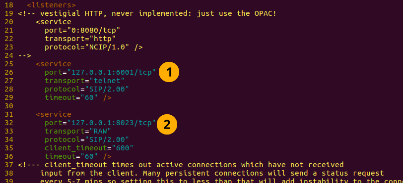
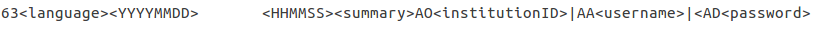
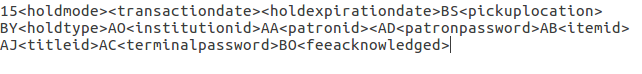
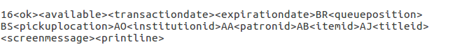
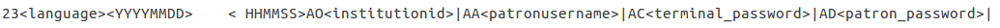
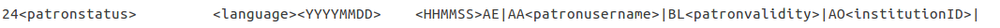
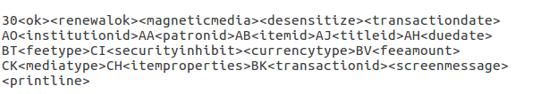
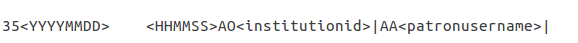
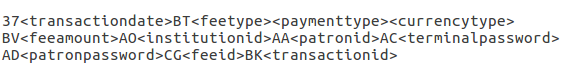
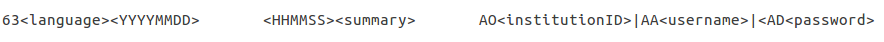

其他的 API 與通訊協定
SIP2
SIP2 (Session Initiation Protocol) 是設備間的通信協定。
SIP2 使用於 Koha 與自助借出設備 (Self Check, SC) 以及自動流通系統 (Automated Circulation System, ACS 即執行 Koha 的伺服器)。
SIP2 包括請求與回應兩部份。
自助借出機器是 ‘笨的’，送出請求至 Koha 伺服器，運算後再回應給客戶端的自助借出機器，藉以協助使用者。
警告
使用 SIP2 的安全通知：為了確保 SIP2 流量通過網際網路的安全，需使用 VPN 或安全通道。
設定 SIP2
以 Debian 套件方式安裝的 Koha，其 SIP2 的設定就簡單多，祗需幾個步驟：
1. In your terminal (in the root Koha directory) write in: sudo koha-enable-sip <instancename>
2. Now you need to configure the SIP2 settings, to do this you need to edit the SIPconfig.xml file which exists in the /etc/koha/sites/<instancename>/ directory. You will need to edit this file as root because it contains passwords (to do so write ‘sudo’ at the start of your command).
如：sudo vi /etc/koha/sites/<instancename>/SIPconfig.xml
备注
重要通知：有三個地方與 SIPconfig.xml 檔案有關。它們是：服務、帳號與機構。
服務
2.1 變更 SIPconfig.xml 檔案前端的埠號值 (在以下的畫面以 1 識別)，同個 IP 位址可以 SIPconfig.xml 檔案識別 2 另個它用。
备注
確認使用不同的埠號，不同的服務不能使用相同的埠號。應使用高埠號 (如 1000 以上)，因為 1000 以上的埠號需要 root 權限。

帳號
在 SIPconfig.xml 檔案內設定的帳號權限僅供 SIP2 服務使用，即祗能發送及收取 SIP2 命令。
警告
寫在此處的帳號資訊必須同時存在於 Koha 資料庫，也就是必須在 Koha 館員介面新增該使用者及密碼 (確認授予流通權限) 做為寫入 SIPconfig.xml 檔案的帳號。
备注
強烈建議祗給該 Koha 使用者帳號流通權限。
把 SIP2 使用者的權限限制於流通而不是超級圖書館員的權限，係為了減少 SIP2 使用者查看讀者的隱私。
若自動流通系統 ACS 或自助借出設備 SC 妥協後，所有的 SIP2 使用者祗有流通權限，限制闖入者祗能經由終端機進來，無法從網頁介面進來搗亂 (超級圖書館員的權限才能這麼做)。所以，就是保護使用者的一個措施。

設定帳號值：
登入帳號：這是帳號名稱。- 適度修改它
密碼：帳號密碼 - 適度修改密碼
分隔值：帳號資訊的分隔值 - 使用預設值
error-detect - Leave as default
機構：使用者所屬圖書館的分館代碼。說明：需在 SIPconfig.xml 檔案先設定該機構並且需存在於 Koha 資料庫。即從 Koha 館員介面新增該分館代碼的圖書館。
編碼：這是編碼帳號資料的標準
終止符號：必須符合 SIP2 伺服器的終止符號值。- 如果知道 SIP2 伺服器的終止符號值，修改它。
以下面的格式可以客製化讀者屬性至 SIP2 設定檔：
<patron_attribute field=”XX” code=”CODE1” /> <patron_attribute field=”XY” code=”CODE2” /> <patron_attribute field=”XZ” code=”CODE3” />
機構
此處設定的機構資料必須與 Koha 館員介面的新增圖書館相符。
警告
設定的所有機構必須與 SIPconfig.xml 檔案相符也必須與同檔案的機構區塊內容一致。
設定機構值：
1. Institution id: The branchcode of the library. - Modify this accordingly. Must be the same as created in Koha and the account area.
應用：定義執行的代碼。- 使用預設值
3. Policy: Policy defines the permitted SIP2 commands allowed from SC’s in this institution. For example: renewal=”true” means that SC’s at that institution have permission to send renewal item SIP2 commands.
4. Starting SIP2 Simply write in the command: sudo koha-start-sip <instancename>
备注
現在可以執行 SIP2 伺服器。
备注
Optionally, you can configure sorting bin behavior, using the UseLocationAsAQInSIP and SIP2SortBinMapping system preferences.
使用 SIP2
SIP2 是通訊協定。送給 SIP2 的訊息是請求或回應。SC 送出請求訊息給 ACS，執行若干邏輯並送回結果值給 SC 做為回應訊息。
請求訊息包括參數，就是被 ACS 使用於其函數的資料，執行諸如續借的請求。
SIP2 命令
必須經由 Linux 終端機撰寫與接數訊息，才能以人工設定/測試 SIP2。
為了對 SIP2 伺服器送出與接收訊息，需以 telnet 打開 SIP2 連結。需指定 telnet 連結的埠號。
查詢 SIPconfig.xml 檔案服務區塊上方，即可找到該等資訊 (注意螢幕下方箭頭所示的埠號)。

寫入終端機
telnet localhost <portnumber>
如：telnet localhost 8023
Now write in the username and password set in one of the accounts in the SIPconfig.xml file.
現在你可以連結至 SIP2 伺服器，你可以開始撰寫並傳送指令當與 SIP2 服務器的連接超時，如果沒有完成寫入和接收命令，只需寫入：
telnet localhost <portnumber>
重新啟用 SIP2 連結。
SIP2 命令語法
每個 SIP2 命令有 2 個數字前置告知命令的作用。
例如，取得讀者資訊，必須加上前置數字：63。伺服器的回應也是前置數字。
以下是請求讀者資訊的 SIP2 請求訊息樣本 (在樣本中是已經新增的 Koha 讀者，帳號是 ‘joe’、密碼是 ‘joes’、讀者證號碼是 ‘y76t5r43’)。
此外，已經從 Koha 館員介面新增分館代號為‘WEL’的圖書館，也設定在 SIPconfig.xml 檔案的機構區)：

所以，SIP2 的請求訊息格式是：

备注
摘要值是 10 字元長度。若寫入 Y 則可以取得摘要與更詳細的資訊性輸出。
其值是 <YYYYMMDD> <HHMMSS> 格式，現在的時間與日期，在YYYYMMDD 與 HHMMSS 之間空 4 格，表示使用的是當地時間不是 UTC 時間。
备注
本手冊以欄位字母代碼表示 SIP2 的訊息欄位，如 AO<institutionid>。
可以把字母代碼寫入 Linux 終端機的 SIP2 命令，但需確認取代值在欄位 (在 <> 內) 就不必寫入 <> 括號內。
SIP2 訊息
封鎖讀者
請求的訊息以前綴號 01 表示，而回應的訊息則以前綴號 24 表示。
請求的訊息：
备注
Card retained is a single character field of either ‘Y’ or ‘N’ which tells the ACS that a card has been retained by the self checkout machine.
回應的訊息：

备注
<patronstatus> 可以儲存 14 個字元的字串資料(第一個字元的位置為0)，此設定值的每一個字元位置之有效設定值包含 Y、N 兩種(字元)。
舉例來說：若字元位置 1 (代表在該字串資料中的第 2 個字元)之值為 Y，其對應的設定結果為 拒絕讀者變更權限。
還入的館藏
請求訊息 (傳送給 ACS 的訊息) 之前綴碼採用 09，而回應訊息 (傳送給 SC 的訊息) 之前綴碼為 10。
請求的訊息：

备注
<no block (Offline)> 此項為單字元資料欄位，其設定值包含 ‘Y’ 或 ‘N’ 兩種(字元)，代表是否啟用離線流通。若您需要手動測試此訊息功能，又您的系統若不支援離線流通，則此欄位之設定值應為 ‘N’。
<transactiondate> 此項為 18 個字元的資料欄位，其格式如下：YYYYMMDDZZZZHHMMSS。
ZZZZ 代表時區，若要設定成當地時區，您必須以 4 個空白字元代表之，但如果要設定成 UTC (全球協調時間)，則必須以 3 個空格和一個 Z 代表之。
回應的訊息：

备注
其他類型可能為：00 : 不詳 01: 在地 02: 遠端 03: ILL 轉移 04: 轉移 99: 其他
如果一個館藏被重新感應，那麼 <resensitize> 的值應該是 Y 不然的話它應該是 N。對館藏進行重新感應以確保如果有人試圖竊取館藏，他們會被偵測到。
借出的館藏
請求訊息前置 11 且回應訊息前置為 12。類似還入命令的語法，除了前置之外是不同的。
預約 – 有些系統可能不支援此功能。就是前置碼為 15 的請求訊息且回應訊息前置碼為 16。
請求的訊息：

备注
<holdmode> 其值為一個字元。+ 表示新增預約，- 表示刪除預約 * 表示變更預約。
回應的訊息：

备注
<ok> 其值可能為 0 (不允許預約或預約失敗) 或 1 (允許預約或預約成功)。
<available> 其值為 Y 或 N。Y 表示該館藏在館內，N 表示該館藏外借中/被預約。
館藏資訊：請求命令的前置碼為 17，回應命令的前置碼為 18
請求的訊息：

备注
參見還入館藏命令 (如前所述) 找出 <xact_date> 的值。
您可以自行決定是否設定終端機的密碼。
回應的訊息：

館藏狀態更新以前綴號 19 表示請求的訊息，而以前綴號 20 表示回應的訊息
請求的訊息：
备注
<itemproperties> 不是固定長度的值，可以寫入館藏大小儲存在 Koha 資料庫內。
回應的訊息：

备注
<itempropertiesok> 的值是 0 或 1。1 表示設定館藏狀態更新的請求訊息 <itemproperties> 已經儲存在 Koha 資料庫。
讀者狀態
以前綴號 23 表示請求的訊息，而用前綴號 24 表示回應的訊息。
請求的訊息：

回應的訊息：

备注
顯示在 <patronvalidity> 的值是 Y (有效) 與 N (無效) 在 <YYYYMMDD> < HHMMSS> 內的值是現在的日期/時間。
兩個值之間的空格表示使用在地時間而不是 UTC 時間。
啟用讀者 - 此功能尚未完備。使用前置碼 25 的請求訊息與前置碼為 26 的回應訊息
备注
這個指令可以取消封鎖讀者的指令。
請求的訊息：

回應的訊息：

更新以前綴號 29 表示請求的訊息，而以前綴號 30 表示回應的訊息
請求的訊息：

备注
<thirdpartyallowed> 其值為 Y 或 N。Y 表示第三方可以更新該館藏。
<noblock> 其值為 Y 或 N。Y 表示 ASC 離線時館藏被借出/還入。
<nbduedate> 是 ACS 離線時還入/借出的日期。
<feeacknowledged> 的值是 Y 或 N。表示讀者接受續借館藏的費用。
回應的訊息：

备注
<ok> 的值為 0 或 1。1 表示續借館藏成功，0 表示續借館藏失敗。
<renewalok> 的值是 Y 或 N。把 <renewalok> 設為 Y 表示館藏已經被借出，續借時應消磁，設為 N 表示館藏未被借出，不可續借。
換句話說，不要讓讀者在目前沒有借出該書籍的時候，更新其借閱狀態。
<magneticmedia> 的值為 Y (表示 yes)、N (表示 no)、或 U (表示不詳 unknown)。
<mediatype> 的值為三個數字。參見：http://multimedia.3m.com/mws/media/355361O/sip2-protocol.pdf
作業階段結束
此地的請求訊息前置碼為 35，回應訊息前置碼為 36
請求的訊息：

回應的訊息：

备注
<success_or_failure> 的值是 Y 表示成功或 N 表示失敗。
付款 – 可能尚未完成。需使用前置 37 的請求訊息及前置 38 的回應訊息
請求的訊息：

备注
<feetype> 的值是介於 01 與 99 之間的數值。參見：http://multimedia.3m.com/mws/media/355361O/sip2-protocol.pdf
<paymenttype> 的值是介於 00 與 99 之間的數值。00 表示現金、01 為 Visa、02 是信用卡。
<currencytype> 的值為長度 3 的文數字用以識別付費的金額。
回應的訊息：

备注
<paymentaccepted> 的值是 Y (付費成功) 或 N (付費失敗)。
讀者資訊
使用前綴號63表示請求的訊息，而以前綴號64表示回應的訊息
請求的訊息：

回應的訊息：

备注
<valid patron> 的值是 Y 表示成功與 N 表示失敗。
备注
<hold itemcount><overdueitemcount><chargeditemscount><fienitemscount><recallitemscount><unavaliableholdscount> 的值都是長度為 4 的文數字。
更新全部
This uses the request message prefix of 65 and the response message prefix of 66.
請求的訊息：
回應的訊息：

备注
<renewedcount> 的值是長度為 4 的數值表示允許續借的館藏數。
<unrenewedcount> 的格式與 <renewedcount> 相同，但表示不能續借的館藏數。
登入
請求訊息前置碼為 93 回應訊息前置碼為 94。
請求的訊息：

备注
<UIDalgorithm> 與 <PWDalgorithm> 的值都是一個字元，表示加密 loginuserid 與 loginpassword 的演算法類型。
寫入的值為 0 表示該值未加密。
回應訊息：941 表示登入成功。940 表示登入失敗 [被不詳主機關閉連結。] 表示登入失敗
重送
請求接收裝置重送最後收到的訊息。
SC -> ACS 重送請求是 97
ACS -> SC 重送請求是 96
ACS 與 SC 的狀態
請求訊息前置碼為 99 回應訊息前置碼為 98。
請求的訊息：

备注
狀態代碼有 3 ：* 0: 表示 SC ok * 1: 表示 SC 沒有紙 * 2: 表示 SC 關機。列印最大寬度昰 3 個整數字元，使用 x.xx 格式時可以用到 4 個字元
回應的訊息：

备注
回應訊息 ‘96’ 表示請求訊息無效或無法理解。
故障排除 SIP2
寫入 telnet localhost <portnumber> 命令時無法連結至遠端主機
此問題有 3 個解決方式：
檢查命令的埠號是否在 SIPconfig.xml 檔案編號 1 的位置，即下例的埠號是 6001 時，正確的命令是：telnet localhost 6001。
檢查 SIPconfig.xml 檔案內的 userid 是否寫了多次。SIPconfig.xml 內的 userid (就是 Koha 使用者名稱) 不能重複。在 SIPconfig.xml 內有多個 userid，就無法連結至 SIP2。
檢查 SIPconfig.xml 檔案內的帳號是否以同名、同密碼、同樣的流通權限存在於 Koha 資料庫內。在 Koha 館員介面新增帳號後，曾退出並再新增 Koha 資料庫，SIPconfig.xml 檔案內的讀者帳號將不會在 Koha 資料庫內，必須於 Koha 館員介面重新建置該帳號。
至以下的資料庫近用 SIP2 紀錄：/var/log/koha/<instancename>
然後檢視 sip-error.log 與 sip-output.log 的輸出，可得到 SIP2 錯誤的詳情。
cat sip-error.log
cat sip-output.log
有用的 SIP2 命令連結：
http://multimedia.3m.com/mws/media/355361O/sip2-protocol.pdf
LDAP
設定 Koha 的 LDAP (輕型目錄存取協定 Lightweight Directory Access Protocol) 就能夠把所有的讀者資訊儲存在中央資料庫內，供使用者於 Koha 及其他系統認證使用。
LDAP 是跨網路及其認證的通訊協定。
LDAP configurations are powerful allowing you to customise how Koha and LDAP interact. LDAP can be configured so that new accounts created in LDAP can be synced down into the Koha database, additionally updates to the LDAP user account are synced down to the Koha database.
不過 Koha 不能同步更新 LDAP 伺服器，祗能單向地由 LDAP 傳往 Koha。
在 LDAP 資料庫使用 Microsoft Windows Active Directory 系統時，Auth_By_Bind 設為 1。
組態 LDAP 前需從機構取得以下的資訊/作為
機構需開啟埠號供伺服器的 AD 近用。
近用 AD 伺服器的資訊 (IP 位址/主機名稱、埠號、SSL 資訊)
組態 AD 伺服器的資訊 (相關的 OU、DC、與使用者名稱有關的 CN 格式)
對映包括預設值在內的 AD 與 Koha 欄位
AD 不提供的預設值 (屬性代碼、分館代碼等)
認證使用者採用綁定 (AD 常用的) 或以帳號登入並檢查嗎？若為後者，需要登入的詳情
Koha 內的使用者名稱與 AD 的使用者名稱相符嗎？若然，很好。否則，如何處理重複的使用者？
設定 LDAP 於 Koha 實例
1 從 Linux 終端機進入含有 koha-conf.xml 檔案的目錄，可能在：* /etc/koha/sites/<instance-name>/ 或 * /etc/koha/
2 以 root 權限開啟 koha-conf.xml 檔案：sudo vi koha-conf.xml
3 找到 ‘<useldapserver>0</useldapserver>’ 字樣並更改為：<useldapserver>1</useldapserver>
4 Then in the next line below write in the LDAP configurations below:
<ldapserver id="<ldapserverid>">
<hostname><hostname></hostname>
<base>dc=<domaincontroller>,dc=<domaincontroller></base>
<user>cn=<nameofuser>, dc=<domaincontroller>,dc=<domaincontroller></user> <!--This is the username of user account with permissions to query the LDAP server -->
<pass><password></pass> <!-- This is password of the user account with permissions to query the LDAP server-->
<replicate><either0or1></replicate> <!-- add new users from LDAP to Koha database -->
<welcome><either0or1></welcome> <!-- send new users the welcome email when added via replicate -->
<update><either0or1></update> <!-- update existing users in Koha database -->
<auth_by_bind><either0or1></auth_by_bind> <!-- set to 1 to authenticate by binding instead of password comparison, e.g., to use Active Directory -->
<principal_name><principalname></principal_name> <!-- optional, for auth_by_bind: a printf format to make userPrincipalName from koha userid -->
<mapping> <!-- match koha SQL field names to your LDAP record field names-->
<firstname is="givenname"></firstname>
<surname is="sn"></surname>
<address is="postaladdress"></address>
<city is="l">Athens, OH</city> <!-- Athens,OH is the default value for
city of all users logging into Koha -->
<zipcode is="postalcode"></zipcode>
<branchcode is="branch">Central</branchcode>
<userid is="uid"></userid>
<password is="userpassword"></password>
<email is="mail"></email>
<categorycode is="employeetype">EM</categorycode>
<phone is="telephonenumber"></phone>
</mapping>
</ldapserver>
5 儲存共離開 koha-conf.xml 檔案
6 寫入以下資料檢查 LDAP 的連結功能：
ldapsearch -H ldaps://host.name -s base -x -w “” -d 1
备注
主機名稱說明 可以是文木或 LDAP 伺服器的 IP 位址 (可包括寫入的埠號)。LDAP 的預設埠號為 636，實際上其埠號為 389
备注
Note about the replicate and update fields The replicate LDAP config field for LDAP in the koha-conf.xml file allow the Koha database to be added to with a new borrower account whenever a user logs into Koha (either the staff client or OPAC) with their LDAP username and password (assuming the same username and password does not already exist in the Koha database).
更新 LDAP 組態欄位 (允許同檔案) 可以讓 LDAP 資料庫與 Koha 資料庫同步。例如，若已設定更新組態為 1，同步結婚後冠夫姓祗需更新 LDAP 資料庫就可，系統同步自行更新 Koha 資料庫。
關於對映欄位 (以高亮度綠色顯示的欄位) <city is=”l”>Athens, OH</city>
左邊的欄位名稱 (以高亮黃色顯示) 即是 LDAP 資料庫的同名欄。
引號內的欄位名稱 (以高亮粉紅色顯示) 是 Koha 資料庫內的欄名。說明：若在 Koha 資料庫內沒有與 LDAP 資料庫同名的欄位，可以鍵入其他的值。
高亮青色的值是 Koha 與 LDAP 的預設值。所以，前例 Koha 與 LDAP的讀者其預設縣市值都是 ‘Athens, OH’。
LDAP 組態樣本：
<useldapserver>1</useldapserver><!-- see C4::Auth_with_ldap for extra configs you must add if you want to turn this on -->
<ldapserver id="ldapserver" listenref="ldapserver">
<hostname>ldaps://example.co.au</hostname>
<base>ou=employees,dc=companya,dc=com,dc=au</base>
<user></user> <!-- DN, if not anonymous -->
<pass></pass> <!-- password, if not anonymous -->
<auth_by_bind>1</auth_by_bind>
<replicate>1</replicate> <!-- add new users from LDAP to Koha database -->
<update>0</update> <!-- update existing users in Koha database -->
<principal_name>ou=employees,dc=companya,dc=com,dc=au</principal_name>
<mapping>
<userid is="uid" ></userid>
<cardnumber is="uid" ></cardnumber>
<email is="mail" ></email>
<surname is="sn" ></surname>
<firstname is="givenname" ></firstname>
<categorycode is="1">EM</categorycode>
<branchcode is="1">SYD</branchcode>
</mapping>
</ldapserver>
對映區塊的值不見得都相同，需依機構的 LDAP 資料庫而定。有些機構不使用 <userid> 而使用 <email> 欄位所以沒有 <userid> 欄位。
故障排除 LDAP
多種因素影響列印 LDAP 錯誤紀錄：
若沒有停用 plack，則將 LDAP 錯誤顯示在 plack-error.log 檔案；若已停用 plack，則把 LDDA 的錯誤顯示在 opac-error.log 檔案 (若使用者登錄於 OPAC) 或 intranet-error.log 檔案 (若使用者登錄於館員介面)。這三個檔案都儲存在以下目錄：
/var/log/koha/<instance>/